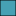

<!doctype html>
<html lang="en">
    <head>
        <meta charset="utf-8">
        <meta http-equiv="X-UA-Compatible" content="IE=edge">
        <meta name="viewport" content="initial-scale=1,user-scalable=no,maximum-scale=1,width=device-width">
        <meta name="mobile-web-app-capable" content="yes">
        <meta name="apple-mobile-web-app-capable" content="yes">
        <link rel="stylesheet" href="css/leaflet.css"><link rel="stylesheet" href="http://maxcdn.bootstrapcdn.com/font-awesome/4.6.1/css/font-awesome.min.css"><link rel="stylesheet" href="css/L.Control.Locate.min.css">
        <link rel="stylesheet" href="css/qgis2web.css">
        <link rel="stylesheet" href="css/leaflet-search.css">
        <style>
        html, body, #map {
            width: 100%;
            height: 100%;
            padding: 0;
            margin: 0;
        }
        </style>
        <title></title>
    </head>
    <body>
        <div id="map">
        </div>
        <script src="js/qgis2web_expressions.js"></script>
        <script src="js/leaflet-src.js"></script><script src="js/L.Control.Locate.min.js"></script>
        <script src="js/leaflet.rotatedMarker.js"></script>
        <script src="js/leaflet-hash.js"></script>
        <script src="js/Autolinker.min.js"></script>
        <script src="js/rbush.min.js"></script>
        <script src="js/labelgun.min.js"></script>
        <script src="js/labels.js"></script>
        <script src="js/leaflet-search.js"></script>
        <script src="data/Wards0.js"></script>
        <script src="data/OuterRingRoad1.js"></script>
        <script src="data/Communities2.js"></script>
        <script>
        var highlightLayer;
        function highlightFeature(e) {
            highlightLayer = e.target;

            if (e.target.feature.geometry.type === 'LineString') {
              highlightLayer.setStyle({
                color: '#ffff00',
              });
            } else {
              highlightLayer.setStyle({
                fillColor: '#ffff00',
                fillOpacity: 0
              });
            }
        }
        var map = L.map('map', {
            zoomControl:true, maxZoom:28, minZoom:11
        })
        var hash = new L.Hash(map);
        map.attributionControl.addAttribution('<a href="https://github.com/tomchadwin/qgis2web" target="_blank">qgis2web</a>');
        L.control.locate().addTo(map);
        var bounds_group = new L.featureGroup([]);
        var basemap0 = L.tileLayer('http://{s}.www.toolserver.org/tiles/bw-mapnik/{z}/{x}/{y}.png', {
            attribution: '&copy; <a href="http://openstreetmap.org">OpenStreetMap</a> contributors, <a href="http://creativecommons.org/licenses/by-sa/2.0/">CC-BY-SA</a>',
            maxZoom: 28
        });
        basemap0.addTo(map);
        function setBounds() {
            if (bounds_group.getLayers().length) {
                map.fitBounds(bounds_group.getBounds());
            }
        }
        function pop_Wards0(feature, layer) {
            layer.on({
                mouseout: function(e) {
                    for (i in e.target._eventParents) {
                        e.target._eventParents[i].resetStyle(e.target);
                    }
                },
                mouseover: highlightFeature,
            });
            var popupContent = '<table>\
                    <tr>\
                        <td colspan="2"><strong>Ward Name</strong><br />' + (feature.properties['Ward Name'] !== null ? Autolinker.link(String(feature.properties['Ward Name'])) : '') + '</td>\
                    </tr>\
                    <tr>\
                        <td colspan="2"><strong>Ward Number</strong><br />' + (feature.properties['Ward Number'] !== null ? Autolinker.link(String(feature.properties['Ward Number'])) : '') + '</td>\
                    </tr>\
                    <tr>\
                        <td colspan="2"><strong>Treatment Need</strong><br />' + (feature.properties['Treatment Need'] !== null ? Autolinker.link(String(feature.properties['Treatment Need'])) : '') + '</td>\
                    </tr>\
                    <tr>\
                        <td colspan="2"><strong>Low Income</strong><br />' + (feature.properties['Low Income'] !== null ? Autolinker.link(String(feature.properties['Low Income'])) : '') + '</td>\
                    </tr>\
                    <tr>\
                        <td colspan="2"><strong>Focus Factor (out of 5)</strong><br />' + (feature.properties['Focus Factor (out of 5)'] !== null ? Autolinker.link(String(feature.properties['Focus Factor (out of 5)'])) : '') + '</td>\
                    </tr>\
                </table>';
            layer.bindPopup(popupContent);
        }

        function style_Wards0_0(feature) {
            if (feature.properties['Focus Factor (out of 5)'] >= 0.000000 && feature.properties['Focus Factor (out of 5)'] <= 1.000000 ) {
                return {
                pane: 'pane_Wards0',
                opacity: 1,
                color: 'rgba(0,0,0,0.7)',
                dashArray: '',
                lineCap: 'butt',
                lineJoin: 'miter',
                weight: 1.0, 
                fillOpacity: 1,
                fillColor: 'rgba(255,255,255,0.7)',
            }
            }
            if (feature.properties['Focus Factor (out of 5)'] >= 1.000000 && feature.properties['Focus Factor (out of 5)'] <= 2.000000 ) {
                return {
                pane: 'pane_Wards0',
                opacity: 1,
                color: 'rgba(0,0,0,0.7)',
                dashArray: '',
                lineCap: 'butt',
                lineJoin: 'miter',
                weight: 1.0, 
                fillOpacity: 1,
                fillColor: 'rgba(193,223,230,0.7)',
            }
            }
            if (feature.properties['Focus Factor (out of 5)'] >= 2.000000 && feature.properties['Focus Factor (out of 5)'] <= 3.000000 ) {
                return {
                pane: 'pane_Wards0',
                opacity: 1,
                color: 'rgba(0,0,0,0.7)',
                dashArray: '',
                lineCap: 'butt',
                lineJoin: 'miter',
                weight: 1.0, 
                fillOpacity: 1,
                fillColor: 'rgba(132,192,205,0.7)',
            }
            }
            if (feature.properties['Focus Factor (out of 5)'] >= 3.000000 && feature.properties['Focus Factor (out of 5)'] <= 4.000000 ) {
                return {
                pane: 'pane_Wards0',
                opacity: 1,
                color: 'rgba(0,0,0,0.7)',
                dashArray: '',
                lineCap: 'butt',
                lineJoin: 'miter',
                weight: 1.0, 
                fillOpacity: 1,
                fillColor: 'rgba(70,161,180,0.7)',
            }
            }
            if (feature.properties['Focus Factor (out of 5)'] >= 4.000000 && feature.properties['Focus Factor (out of 5)'] <= 5.000000 ) {
                return {
                pane: 'pane_Wards0',
                opacity: 1,
                color: 'rgba(0,0,0,0.7)',
                dashArray: '',
                lineCap: 'butt',
                lineJoin: 'miter',
                weight: 1.0, 
                fillOpacity: 1,
                fillColor: 'rgba(9,130,155,0.7)',
            }
            }
        }
        map.createPane('pane_Wards0');
        map.getPane('pane_Wards0').style.zIndex = 400;
        map.getPane('pane_Wards0').style['mix-blend-mode'] = 'normal';
    var layer_Wards0 = new L.geoJson(json_Wards0, {
        attribution: '<a href=""></a>',
        pane: 'pane_Wards0',
        onEachFeature: pop_Wards0,
        style: style_Wards0_0,
    });
        bounds_group.addLayer(layer_Wards0);
        map.addLayer(layer_Wards0);
        function pop_OuterRingRoad1(feature, layer) {
            layer.on({
                mouseout: function(e) {
                    for (i in e.target._eventParents) {
                        e.target._eventParents[i].resetStyle(e.target);
                    }
                },
                mouseover: highlightFeature,
            });
            var popupContent = '<table>\
                    <tr>\
                        <td colspan="2">' + (feature.properties['Name'] !== null ? Autolinker.link(String(feature.properties['Name'])) : '') + '</td>\
                    </tr>\
                </table>';
            layer.bindPopup(popupContent);
        }

        function style_OuterRingRoad1_0() {
            return {
                pane: 'pane_OuterRingRoad1',
                opacity: 1,
                color: 'rgba(0,0,0,1.0)',
                dashArray: '',
                lineCap: 'square',
                lineJoin: 'bevel',
                weight: 2.0,
                fillOpacity: 0,
            }
        }
        map.createPane('pane_OuterRingRoad1');
        map.getPane('pane_OuterRingRoad1').style.zIndex = 401;
        map.getPane('pane_OuterRingRoad1').style['mix-blend-mode'] = 'normal';
    var layer_OuterRingRoad1 = new L.geoJson(json_OuterRingRoad1, {
        attribution: '<a href=""></a>',
        pane: 'pane_OuterRingRoad1',
        onEachFeature: pop_OuterRingRoad1,
        style: style_OuterRingRoad1_0,
    });
        bounds_group.addLayer(layer_OuterRingRoad1);
        map.addLayer(layer_OuterRingRoad1);
        function pop_Communities2(feature, layer) {
            layer.on({
                mouseout: function(e) {
                    for (i in e.target._eventParents) {
                        e.target._eventParents[i].resetStyle(e.target);
                    }
                },
                mouseover: highlightFeature,
            });
            var popupContent = '<table>\
                    <tr>\
                        <td colspan="2"><strong>Number</strong><br />' + (feature.properties['Number'] !== null ? Autolinker.link(String(feature.properties['Number'])) : '') + '</td>\
                    </tr>\
                    <tr>\
                        <td colspan="2"><strong>Type</strong><br />' + (feature.properties['Type'] !== null ? Autolinker.link(String(feature.properties['Type'])) : '') + '</td>\
                    </tr>\
                    <tr>\
                        <td colspan="2"><strong>Location</strong><br />' + (feature.properties['Location'] !== null ? Autolinker.link(String(feature.properties['Location'])) : '') + '</td>\
                    </tr>\
                </table>';
            layer.bindPopup(popupContent);
        }

        function style_Communities2_0() {
            return {
                pane: 'pane_Communities2',
                radius: 4.0,
                opacity: 1,
                color: 'rgba(0,0,0,1.0)',
                dashArray: '',
                lineCap: 'butt',
                lineJoin: 'miter',
                weight: 1,
                fillOpacity: 1,
                fillColor: 'rgba(155,16,9,1.0)',
            }
        }
        map.createPane('pane_Communities2');
        map.getPane('pane_Communities2').style.zIndex = 402;
        map.getPane('pane_Communities2').style['mix-blend-mode'] = 'normal';
        var layer_Communities2 = new L.geoJson(json_Communities2, {
            attribution: '<a href=""></a>',
            pane: 'pane_Communities2',
            onEachFeature: pop_Communities2,
            pointToLayer: function (feature, latlng) {
                var context = {
                    feature: feature,
                    variables: {}
                };
                return L.circleMarker(latlng, style_Communities2_0(feature));
            },
        });
        bounds_group.addLayer(layer_Communities2);
        map.addLayer(layer_Communities2);
        var baseMaps = {};
        L.control.layers(baseMaps,{' Communities': layer_Communities2,' Outer Ring Road': layer_OuterRingRoad1,'Wards<br /><table><tr><td style="text-align: center;"></td><td> 0 - 1</td></tr><tr><td style="text-align: center;"></td><td> 1 - 2</td></tr><tr><td style="text-align: center;"></td><td> 2 - 3</td></tr><tr><td style="text-align: center;"></td><td> 3 - 4</td></tr><tr><td style="text-align: center;"></td><td> 4 - 5</td></tr></table>': layer_Wards0,}).addTo(map);
        setBounds();
        map.addControl(new L.Control.Search({
            layer: layer_Communities2,
            initial: false,
            hideMarkerOnCollapse: true,
            propertyName: 'Number'}));
        </script>
    </body>
</html>
